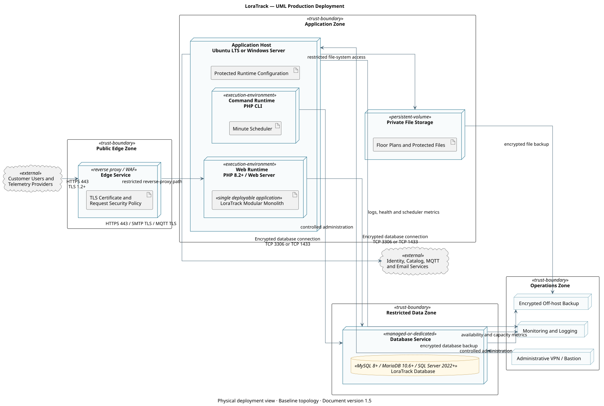

Document version: 1.5
Classification: Public product documentation
| Field | Value |
|---|---|
| Product | LoraTrack |
| Document type | Production Infrastructure and Operations Guide |
| Document version | 1.5 |
| Audience | Users, administrators, engineering, operations, and security teams |
This documentation describes product capabilities and procedures. References to practices or standards do not constitute certification, independent assurance, or formal customer acceptance.
This UML deployment diagram defines the production infrastructure boundary, deployed application nodes, required services, trust zones, and principal communication paths. The final topology may use customer-managed servers or equivalent managed services while preserving the same security boundaries.
The application host runs one LoraTrack modular-monolith deployment. The web runtime and minute scheduler are two execution entry points into the same application release, configuration, domain modules, and database; they are not separate application services.

| Node | Required Responsibility |
|---|---|
| Edge security | Terminates trusted HTTPS, applies request limits, and optionally provides WAF or reverse-proxy controls. |
| Application host | Runs the web application and the minute scheduler with access to protected configuration and private storage. |
| Database service | Provides MySQL 8+, MariaDB 10.6+, or Microsoft SQL Server 2022+ persistence over encrypted transport and accepts connections only from approved application hosts. |
| Private storage | Retains customer floor plans and protected application files outside the public web root. |
| Monitoring service | Receives availability, application, scheduler, capacity, and security signals. |
| Backup repository | Stores encrypted, access-controlled database and private-file backups outside the application host. |
The editable UML source is provided in production-deployment-diagram.puml.
This section defines the infrastructure a customer must provide to operate LoraTrack in production. Final capacity must be confirmed from the expected number of organizations, assets, users, connectors, telemetry volume, retention period, and availability target.
| Component | Production Requirement | Operational Notes |
|---|---|---|
| Operating system | Supported Ubuntu LTS or Windows Server with IIS 10 | Apply vendor security updates under the customer's patch policy. |
| PHP | 8.2 or later, supported by the selected operating system | Enable OPcache and configure memory and request limits for the expected workload. |
| Web server | Nginx or Apache on Linux; IIS 10 on Windows | Publish only the Laravel public directory and enforce HTTPS. |
| Database | MySQL 8.0+, MariaDB 10.6+, or Microsoft SQL Server 2022+ | Use a dedicated database and least-privilege application account. Require encrypted transport and the matching PHP PDO driver. |
| Scheduler | Cron or Windows Task Scheduler | Execute php artisan schedule:run once per minute. A persistent Laravel Queue worker is not required. |
| Storage | Persistent application storage plus independent backup capacity | Private floor plans, generated data, and application logs must not be exposed by the web server. |
| DNS and TLS | Customer-controlled production hostname and valid trusted certificate | Monitor certificate expiration and redirect HTTP to HTTPS. |
| Time synchronization | NTP-synchronized application and database hosts | Required for reliable telemetry, audit, and troubleshooting timestamps. |
Enable bcmath, ctype, curl, dom, fileinfo, gd, json, mbstring, openssl, pdo, tokenizer, xml, xmlreader, xmlwriter, and zip. Enable pdo_mysql for MySQL/MariaDB or Microsoft pdo_sqlsrv for SQL Server. intl is recommended. Redis support is optional when Redis is selected for cache or sessions.
MYSQL_ATTR_SSL_CA with the absolute CA certificate path.libmysql, configure MYSQL_ATTR_MAX_BUFFER_SIZE=6291456 so accepted Meraki payloads are not truncated during database reads.pdo_sqlsrv, enable certificate validation, and use TCP 1433 or the customer-approved explicit port.The customer firewall and proxy policy must permit only the flows required by enabled capabilities:
| Flow | Direction | Purpose |
|---|---|---|
| HTTPS 443 | Inbound | User access and authenticated webhook delivery. |
| Database TLS | Application to database | TCP 3306 for MySQL/MariaDB or TCP 1433 for SQL Server by default; restrict by source and destination. |
| HTTPS 443 | Outbound | Microsoft identity and configured catalog or telemetry providers. |
| SMTP submission | Outbound | Notifications and invitations when email is enabled. |
| MQTT TLS | Outbound | Required only for configured MQTT connectors. |
| DNS and NTP | Outbound | Name resolution and time synchronization. |
The database must not be exposed to the public internet. Administrative access should use the customer's controlled management network, VPN, or bastion service.
| Service | When Required |
|---|---|
| Microsoft Entra ID | Microsoft sign-in. |
| SMTP service | Invitations, password workflows, and operational notifications. |
| The Things Industries | TTI webhook or MQTT telemetry. |
| Meraki | Meraki Scanning/Location API ingestion. |
| SAP S/4HANA or another catalog provider | Automated catalog synchronization. |
| Central logging and monitoring platform | Production alerting, audit support, and incident investigation. |
| Backup repository | Encrypted database and private-file backups stored outside the application host. |
The customer and implementation team must agree on:
Do not approve production capacity until representative telemetry and user workloads have been validated in a customer-approved pre-production environment.
Start from .env.example. Do not generate .env from a pipeline containing embedded secrets.
Critical variables:
APP_ENVAPP_KEYAPP_DEBUG=false in productionAPP_URLDB_*MYSQL_ATTR_SSL_CA for MySQL/MariaDB deployments that require TLS.MYSQL_ATTR_MAX_BUFFER_SIZE=6291456 when PDO uses libmysql, so Meraki payloads up to the 5 MiB HTTP limit are not truncated while being read.DB_CONNECTION=sqlsrv is selected.CACHE_STORESESSION_DRIVERMAIL_*MICROSOFT_* when Microsoft Entra ID is usedcomposer install --no-dev --optimize-autoloader
php artisan key:generate
php artisan migrate --force
php artisan config:cache
php artisan route:cache
php artisan view:cache
Do not regenerate APP_KEY in an existing production environment because it invalidates encrypted data and sessions.
Laravel requires write access to:
storage/bootstrap/cache/Floor plans must remain in private storage:
storage/app/private
Do not expose floor plans through a public symlink.
Run php artisan schedule:run once every minute. The scheduler drains durable webhook inboxes and processes observations, TTI/MQTT events, catalog synchronization requests, alerts, and retention activities. A persistent Laravel Queue worker is not required. Configure exactly one effective scheduler invocation per environment unless a tested distributed locking design has been approved.
The production scheduler account requires access to the application directory, PHP CLI, application configuration, logs, private storage, and the production database. Monitor invocation failures and total processing duration.
| Environment | Purpose | Data |
|---|---|---|
| pre-production | deployment, integration, capacity, recovery, and customer acceptance validation | synthetic, anonymized, or explicitly approved data |
| production | live operation | controlled data |
Do not use real payloads or real floor plans in non-production without approval and controls.
The plan must cover:
storage/app/private;.env;Initial frequency recommendation:
Define before each change:
APP_DEBUG=false.Tutorial for deploying LoraTrack on Ubuntu Server LTS with Nginx, PHP-FPM, MySQL or MariaDB, and cron.
Production baseline:
sudo apt update
sudo apt upgrade -y
sudo apt install -y software-properties-common unzip git curl ca-certificates gnupg
sudo apt install -y php php-fpm php-cli php-common php-mbstring php-xml php-curl php-zip php-bcmath php-gd php-intl php-opcache php-mysql
Verify:
php -v
php -m | grep -E "bcmath|curl|fileinfo|gd|mbstring|openssl|xml|zip"
Suggested php.ini values:
memory_limit=256M
upload_max_filesize=25M
post_max_size=30M
max_execution_time=120
date.timezone=America/Santiago
opcache.enable=1
opcache.enable_cli=1
Restart FPM:
sudo systemctl restart php*-fpm
sudo apt install -y nginx
sudo systemctl enable nginx
sudo systemctl start nginx
Provision a supported MySQL or MariaDB service with encrypted transport. Install the customer-approved CA certificate on the application server and restrict database access to the application host.
Validate:
php -m | grep -E "mysqli|pdo_mysql"
sudo systemctl restart php*-fpm
Database account example:
CREATE DATABASE loratrack CHARACTER SET utf8mb4 COLLATE utf8mb4_unicode_ci;
CREATE USER 'loratrack_app'@'APPLICATION_HOST' IDENTIFIED BY 'CHANGE_ME_LONG_SECRET';
GRANT SELECT, INSERT, UPDATE, DELETE, CREATE, ALTER, INDEX, DROP, REFERENCES
ON loratrack.* TO 'loratrack_app'@'APPLICATION_HOST';
FLUSH PRIVILEGES;
After migrations, evaluate removing DDL permissions from the runtime account and using a separate migration account.
cd /tmp
php -r "copy('https://getcomposer.org/installer', 'composer-setup.php');"
php composer-setup.php
sudo mv composer.phar /usr/local/bin/composer
composer --version
Validate the official checksum before running the installer in controlled environments.
sudo adduser --system --group --home /var/www/loratrack loratrack
sudo mkdir -p /var/www/loratrack/current
sudo chown -R loratrack:www-data /var/www/loratrack
sudo -u loratrack git clone REPO_URL /var/www/loratrack/current
cd /var/www/loratrack/current
Install dependencies:
sudo -u loratrack composer install --no-dev --optimize-autoloader
.envsudo -u loratrack cp .env.example .env
sudo -u loratrack nano .env
Minimum values:
APP_NAME=LoraTrack
APP_ENV=production
APP_DEBUG=false
APP_URL=https://loratrack.example.com
APP_TIMEZONE=America/Santiago
DB_CONNECTION=mysql
DB_HOST=mysql.example.com
DB_PORT=3306
DB_DATABASE=loratrack
DB_USERNAME=loratrack_app
DB_PASSWORD=CHANGE_ME_LONG_SECRET
MYSQL_ATTR_SSL_CA=/etc/ssl/certs/customer-mysql-ca.pem
MYSQL_ATTR_MAX_BUFFER_SIZE=6291456
CACHE_STORE=database
SESSION_DRIVER=database
Generate APP_KEY only for a new installation:
sudo -u loratrack php artisan key:generate
sudo chown -R loratrack:www-data /var/www/loratrack/current
sudo find /var/www/loratrack/current -type f -exec chmod 0644 {} \;
sudo find /var/www/loratrack/current -type d -exec chmod 0755 {} \;
sudo chmod -R ug+rwx /var/www/loratrack/current/storage /var/www/loratrack/current/bootstrap/cache
sudo -u loratrack php artisan migrate --force
sudo -u loratrack php artisan config:cache
sudo -u loratrack php artisan route:cache
sudo -u loratrack php artisan view:cache
Use /var/www/loratrack/current/public as the web root.
server {
listen 80;
server_name loratrack.example.com;
root /var/www/loratrack/current/public;
index index.php index.html;
client_max_body_size 30M;
location / {
try_files $uri $uri/ /index.php?$query_string;
}
location ~ \.php$ {
include snippets/fastcgi-php.conf;
fastcgi_pass unix:/run/php/php-fpm.sock;
fastcgi_param SCRIPT_FILENAME $realpath_root$fastcgi_script_name;
include fastcgi_params;
}
location ~ /\.(?!well-known).* {
deny all;
}
}
Adjust the PHP-FPM socket to the installed version.
Use an approved PKI certificate or Let's Encrypt where allowed.
Scheduler cron:
* * * * * cd /var/www/loratrack/current && php artisan schedule:run >> storage/logs/schedule.log 2>&1
No Laravel Queue systemd service is required.
MICROSOFT_CLIENT_ID=
MICROSOFT_CLIENT_SECRET=
MICROSOFT_TENANT_ID=
MICROSOFT_REDIRECT_URI=https://loratrack.example.com/auth/microsoft/callback
Then run:
sudo -u loratrack php artisan config:cache
curl -I https://loratrack.example.com/login
sudo -u loratrack php artisan about
sudo -u loratrack php artisan schedule:run
Validate login, dashboard, /operations/health, connector creation, TTI ingestion, private floor plan access, and scheduled processing.
Tutorial for deploying LoraTrack on Windows Server with IIS, PHP FastCGI, MySQL or MariaDB, and Task Scheduler.
Production baseline:
Install:
PowerShell as Administrator:
Install-WindowsFeature Web-Server, Web-CGI, Web-Common-Http, Web-Default-Doc, Web-Static-Content, Web-Http-Errors, Web-Http-Redirect, Web-Filtering, Web-Mgmt-Console
Install URL Rewrite from an approved internal package or Microsoft source.
Install PHP NTS x64, for example:
C:\PHP\8.3
Copy php.ini-production to php.ini and enable:
extension_dir="ext"
extension=bcmath
extension=curl
extension=fileinfo
extension=gd
extension=mbstring
extension=openssl
extension=pdo_mysql
extension=zip
cgi.force_redirect=0
cgi.fix_pathinfo=1
fastcgi.impersonate=1
memory_limit=256M
upload_max_filesize=25M
post_max_size=30M
max_execution_time=120
date.timezone=America/Santiago
opcache.enable=1
opcache.enable_cli=1
Verify:
php -v
php -m
Add a handler mapping:
*.phpFastCgiModuleC:\PHP\8.3\php-cgi.exePHP via FastCGIProvision a supported database service with TLS required. Restrict network access to the application server and use a dedicated least-privilege account.
Create database and login:
CREATE DATABASE loratrack CHARACTER SET utf8mb4 COLLATE utf8mb4_unicode_ci;
CREATE USER 'loratrack_app'@'APPLICATION_HOST' IDENTIFIED BY 'CHANGE_ME_LONG_SECRET';
GRANT SELECT, INSERT, UPDATE, DELETE, CREATE, ALTER, INDEX, DROP, REFERENCES
ON loratrack.* TO 'loratrack_app'@'APPLICATION_HOST';
FLUSH PRIVILEGES;
Validate:
select @@version;
New-Item -ItemType Directory -Force C:\inetpub\loratrack
git clone REPO_URL C:\inetpub\loratrack
cd C:\inetpub\loratrack
composer install --no-dev --optimize-autoloader
.envCopy-Item .env.example .env
notepad .env
Minimum values:
APP_NAME=LoraTrack
APP_ENV=production
APP_DEBUG=false
APP_URL=https://loratrack.example.com
APP_TIMEZONE=America/Santiago
DB_CONNECTION=mysql
DB_HOST=mysql.example.com
DB_PORT=3306
DB_DATABASE=loratrack
DB_USERNAME=loratrack_app
DB_PASSWORD=CHANGE_ME_LONG_SECRET
MYSQL_ATTR_SSL_CA=C:\ProgramData\LoraTrack\certificates\mysql-ca.pem
MYSQL_ATTR_MAX_BUFFER_SIZE=6291456
CACHE_STORE=database
SESSION_DRIVER=database
Generate APP_KEY only for a new installation:
php artisan key:generate
The site physical path must be:
C:\inetpub\loratrack\public
Example:
Import-Module WebAdministration
New-Website -Name "LoraTrack" -Port 80 -HostHeader "loratrack.example.com" -PhysicalPath "C:\inetpub\loratrack\public"
Configure HTTPS using an approved PKI or public CA certificate.
web.configCreate C:\inetpub\loratrack\public\web.config:
<?xml version="1.0" encoding="UTF-8"?>
<configuration>
<system.webServer>
<rewrite>
<rules>
<rule name="Laravel" stopProcessing="true">
<match url=".*" />
<conditions logicalGrouping="MatchAll">
<add input="{REQUEST_FILENAME}" matchType="IsFile" negate="true" />
<add input="{REQUEST_FILENAME}" matchType="IsDirectory" negate="true" />
</conditions>
<action type="Rewrite" url="index.php" />
</rule>
</rules>
</rewrite>
<security>
<requestFiltering>
<requestLimits maxAllowedContentLength="31457280" />
</requestFiltering>
</security>
<defaultDocument>
<files>
<clear />
<add value="index.php" />
</files>
</defaultDocument>
</system.webServer>
</configuration>
Do not point IIS to the project root.
Grant read access to the project and write access only to:
storagebootstrap\cacheExample:
icacls C:\inetpub\loratrack /grant "IIS AppPool\LoraTrack:(OI)(CI)RX"
icacls C:\inetpub\loratrack\storage /grant "IIS AppPool\LoraTrack:(OI)(CI)M"
icacls C:\inetpub\loratrack\bootstrap\cache /grant "IIS AppPool\LoraTrack:(OI)(CI)M"
php artisan migrate --force
php artisan config:cache
php artisan route:cache
php artisan view:cache
Scheduler task:
C:\PHP\8.3\php.exeartisan schedule:runC:\inetpub\loratrackNo Laravel Queue task or persistent queue service is required.
MICROSOFT_CLIENT_ID=
MICROSOFT_CLIENT_SECRET=
MICROSOFT_TENANT_ID=
MICROSOFT_REDIRECT_URI=https://loratrack.example.com/auth/microsoft/callback
Apply:
php artisan config:cache
iisreset
Invoke-WebRequest https://loratrack.example.com/login -UseBasicParsing
php artisan about
php artisan schedule:run
Validate login, dashboard, /operations/health, floor plan access, connector creation, telemetry processing, and email delivery.
storage\logs\laravel.log and Windows Event Viewer.web.config.storage and bootstrap\cache..env changes do not apply: run php artisan config:clear, php artisan config:cache, and iisreset.php artisan schedule:run -v manually and inspect Task Scheduler history.Define the minimum tasks required to operate LoraTrack in an enterprise environment and diagnose common failures.
Run every minute:
php artisan schedule:run
The scheduler is the only required background executor. It processes Meraki batches and observations, TTI/MQTT telemetry, and requested catalog synchronizations without Laravel Queue. TTI and MQTT commands process at most three pending events per execution.
Scheduled tasks:
loratrack:evaluate-alerts every 10 minutes.loratrack:manage-telemetry-storage hourly.loratrack:prune-meraki-history hourly.When MQTT connectors are configured:
php artisan loratrack:mqtt-listen
The listener must be supervised and restarted on failure.
Route:
/operations/health
Review:
Laravel log:
storage/logs/laravel.log
Scheduler cron output example:
php artisan schedule:run >> storage/logs/schedule.log 2>&1
Do not enable tracing that prints credentials.
php artisan schedule:run -v
select id, connector_id, device_id, processing_status, processing_error,
observed_at, received_at, processed_at
from telemetry_events
order by received_at desc
limit 20;
Check database connection limits if max_user_connections appears.
Confirm there is only one cron entry invoking the scheduler each minute.
Useful SQL:
select id, device_id, observed_at, received_at, processing_status, processing_error
from telemetry_events
order by received_at desc
limit 10;
The track view shows position_estimates, not raw telemetry_events.
Review:
select id, asset_id, telemetry_event_id, floor_plan_id, calculated_at, x, y
from position_estimates
where asset_id = '{asset_id}'
order by calculated_at desc;
If telemetry exists without a position, check:
A disabled connector does not process telemetry. Queued events are marked ignored when taken by the job.
To resume:
last_activity_at and last_success_at.Symptom:
SQLSTATE[42000] [1226] User has exceeded the max_user_connections resource
Actions:
telemetry_events growth;For level 2/3 support collect:
Define a baseline procedure for installing, validating, and calibrating LoraTrack in an industrial facility.
| Role | Responsibility |
|---|---|
| Project lead | Scope, work windows, and acceptance. |
| OT/IT engineering | Network, access, servers, security, and integrations. |
| RF/IoT specialist | Devices, beacons, trackers, and gateways. |
| LoraTrack administrator | Organizations, users, connectors, and configuration. |
| Customer operations | Use case validation and acceptance criteria. |
APP_DEBUG=false.beacon or scanner.active.processed.signal_observations.fixed_beacons_mobile_tracker;
- mobile_beacon_fixed_scanners.telemetry_events.position_estimates.Use the floor plan calibration workbench:
Examples:
Deliver:
Store: